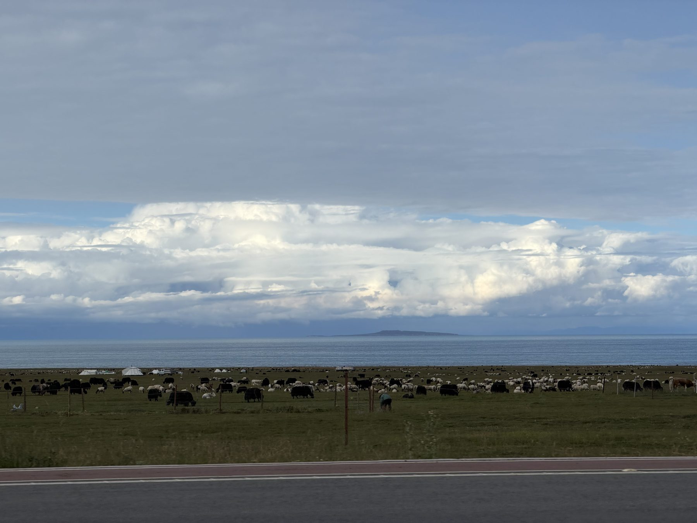

自动整理
按时间、位置与地貌，将相册和碎片笔记组织成可靠时间轴。
TRAVEL MEMORY EDITOR · 作品原型 01
照片、路线、吐槽与路边的问题，不再散落在相册和备忘录里。Wanderlogue 让每一次旅行拥有时间、地点、知识与叙事。
打开编排器 ↓
1,551 张照片
＋18 天碎片记录
＋一条 GPS 路线
→一本属于你的旅行杂志LIVE COMPOSER / 交互式编排
选择阅读偏好，下面的成刊会即时调整视觉与信息层级。
当前版本
北欧清新 · 故事优先 · 完整成刊
08.10—08.27
一名女大学生与家人的十八天公路日志
ROUTE ATLAS / 动态路线
THE FINISHED ISSUE / 示例成刊
没有把每一站都写成“绝美”。走错、失望、疲惫和突然懂了一件事，同样值得被收进旅行。
MEMORY, EXPANDED / 回忆增益
知识不是百科插播，而是从用户当时拍下的问题出发。
FROM MEMORY TO PRODUCT
按时间、位置与地貌，将相册和碎片笔记组织成可靠时间轴。
不抹掉吐槽、失望与家庭互动，让生成内容仍然属于本人。
从照片中的植物、建筑和地质发问，让回忆过程产生新收获。
输出互动网页、长图或纪念册，兼顾私人保存与公开分享。